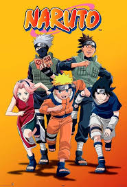

naruto
ნარუტო მანგის სერიებად გამოსცა გამომცემლობა Shueisha-მ 1999 წელს, გაზეთ Weekly Shōnen Jump-ში გამოიცა ტანკობონის ფორმით რომელსაც 72 ტომი აქვს. მანგამ მალევე მოიპოვა პოპულარობა და ამის გამო ის გამოიცა ანიმე სერიებადაც, რომლის შემქმნელებიც არიან კომპანია Studio Pierrot და Aniplex. შემდეგ მისი ჩვენების უფლებამოსილება მოიპოვა იაპონიის მსხვილმა ტელეარხმა TV Tokyo-მ 2002 წლის 2 ოქტომბერს და ანიმეს პირველი ნაწილი (ბავშვობის ნაწილი) დასრულდა 220 სერიით. 2007 წლის 15 თებერვალიდან დაიწყო მისი ახალი ნაწილი (თინეიჯერობის სერიები) რომლის სახელიცაა ნარუტო ქარიშხლის ქრონიკები (იაპონ. ナルト-疾風伝) რომელიც 2017 წლის 23 მარტს დასრულდა 500 სერიით, ჯამში 700-ზე მეტი სერია გამოიცა. ამ სერიების გამოცემის დროს გამოიცა ასევე ნარუტოს თერთმეტი ფილმი და თორმეტი ორიგინალური ვიდეო ანიმაცია (OVAs). ნარუტოს სამყარო მოიცავს ასევე ვიდეო თამაშებსაც სადაც შექმნილია ათზე მეტი თამაშის სერია.

ნარუტო (იაპონ. ナルト?) — მანგა, რომლის ავტორია მასაში კიშიმოტო. ეს ამბავი მოგვითხრობს ახალგაზრდა, დაჩაგრულ, ხმაურიან ბიჭზე, რომელიც ყურადღებას მხოლოდ უიღბლოობით იქცევს. ამიტომაც მისი მიზანია გახდეს ჰოკაგე, რათა ყველას დაუმტკიცოს თავისი შესაძლებლობები და გახდეს სახალხოდ აღიარებული. ჰოკაგე არის ტიტული რომელიც მართავს სოფელს, ეს ძლიერების ხვედრია და სწორედ ამისკენ მიისწრაფვის ნარუტო. ისტორია ორი ნაწილისაგან შედგება, პირველი მისი ბავშვობის წლებისგან ხოლო მეორე კი თინეიჯერობის წლებისგან. სიტყვა ნარუტო იაპონურად შეიძლება აღმოცენებას ნიშნავდეს, ან იაპონური პროდუქტის (რამენის ერთ-ერთი ინგრედიენტის) კამაბოკოს ერთ−ერთ ჯიშს, რომელსაც გაჭრისას შიგთავსი დახვეული, სპირალისებრი ფორმის აქვს. სპირალისებრი ფორმა სერიალში მრავალჯერ ჩნდება. უძუმაკი (ნარუტოს გვარი) კი იაპონურად სპირალს ნიშნავს.